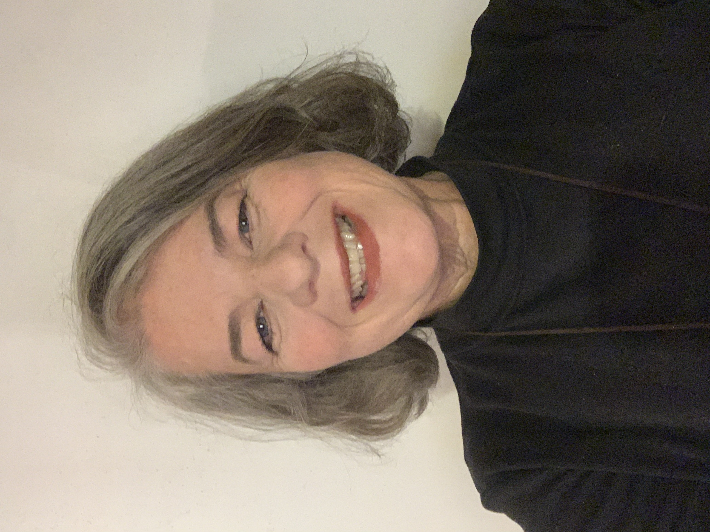

Some Personal Facts:
Hello,
My name is Christine Jackson
I was born and raised in Louisville, Kentucky and have continued to live in this beautiful state most of my life.

Here are some of my "LOVES":
My favorite hobby is anything to do with a body of water, especially lakes...

I'd be remiss if I didn't mention my beautiful family, including my awesome black lab, HaPpY. I love them dearly and rejoice in the time we spend together.
Here is a picture of my wonderful husband, Bill and me.
I have a daughter, Mandy...
... a son, Buddy and grand-daughter, Tesla.
Here is picture of my mom, Carol and me...
I have two sisters, Jean and Michelle: Michelle is blessed with a husband, Rick; three daughters, Haley, Lynn, and Bella; and 5 dogs!

Trying New Things is Great!
I also love to lean new things- I am a fast learner and have a great hunger for more knowledge. I have recently completed a cohort with Commonwealth Coders, an intensive 16-week program for web development. The focus was on HTML, CSS, Bootstrap, Javascript, React and Python. In May 2022, I earned a certificate of completion and am seeking a position where I can continue to grow my web development skills and express my creativity.